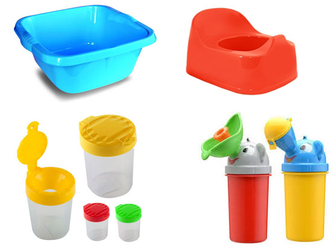
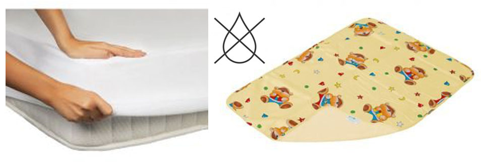
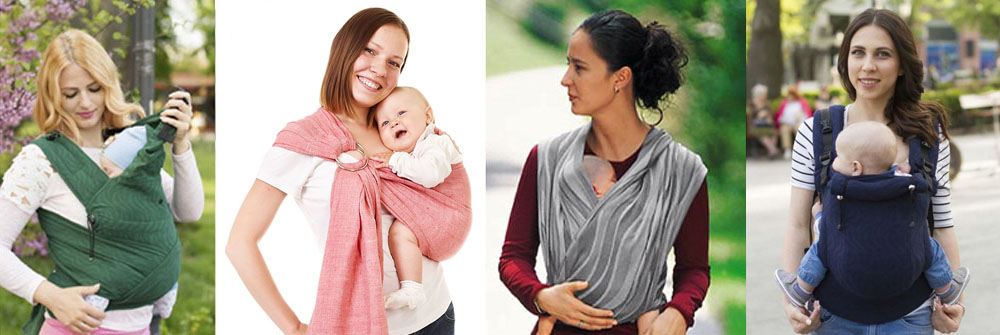
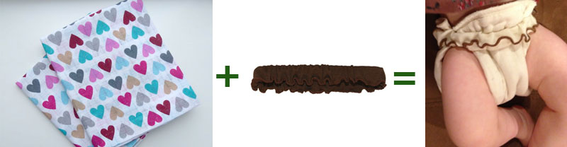
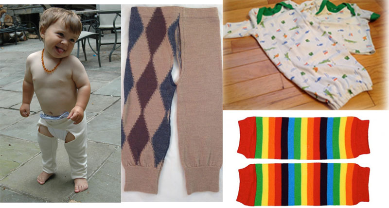
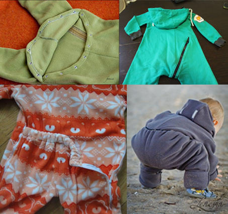
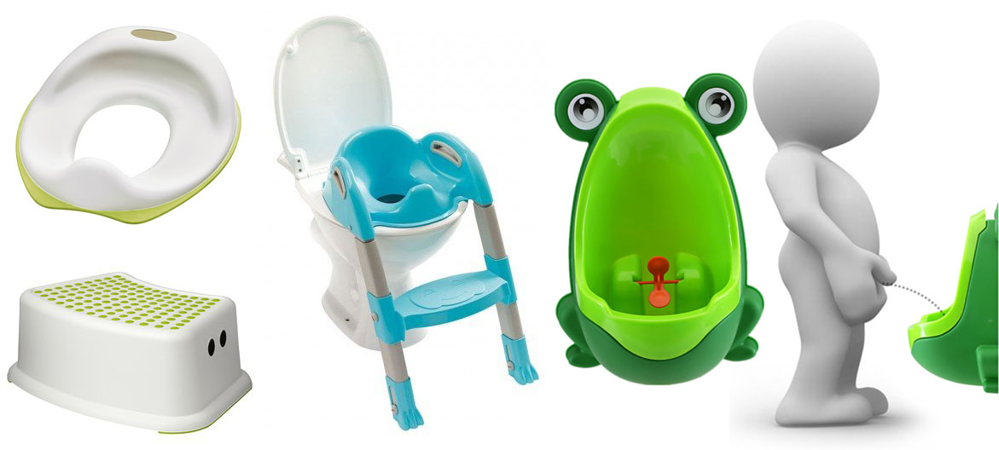

Дитина без підгузка. Метод природної гігієни (частина 3)

Попередні частини тут:
Частина 1. Що таке висаджування? Чому варто спробувати?
Частина 2. Як це робиться? Зручні положення
Атрибути, які можуть згодитися

Перш за все це те, над чим висаджують дитину. Крім санвузла, це може бути зручна миска, розмір залежить від того, чи її ставлять на підлогу, чи фіксують ногами. Пізніше може бути горщик. Для висаджування поза домом можуть бути зручні інші ємкості, наприклад, герметичні пластикові контейнери. Ноу-хау – спеціальний «слоник», з допомогою якого з’являється можливість охайно висадити і хлопчика, і дівчинку навіть у дуже незручних обставинах (транспорт, прогулянка в комбінезоні в холодну погоду).

Для того, щоб убезпечити спальне місце на випадок халепи, згодяться непромокальні пелюшки та наматрасники. Для висаджування більш зручно спати разом з дитиною, тому варто подумати над великим непромокальним наматрасником чи простирадлом – на все доросле ліжко.

Легше реагувати на сигнали дитини тоді, коли вона весь час поруч, в цьому допоможе слінг. Напочатку для новонароджених може стати в пригоді трикотажний слінг – завдяки його еластичності можливо виймати і вкладати назад дитину, не перемотуючи слінг. Також можна вибирати переноски, які дуже легко і швидко одягаються (адаптований май-слінг, просто май, ергорюкзак – залежно від віку) або вдосконалювати навики мотання. Примотувати малечу в слінг варто після того, як щойно висадили її.
У слінгу ймовірність невдачі значно нижча, ніж без нього – малята стараються не пісяти і не какати в слінг.

Поки з'явиться впевненість у своїх силах, може бути доцільно підстрахуватися багаторазовими підгузками. Лайфхак – є підгузки-вкладки, які тримаються на спеціальному поясі, їх легше знімати.

Звичайно, має значення також одяг. Боді і «чоловічки» пристосовані радше до підгузків, тому з ними буде незручно. Доречніше використовувати роздільні кофтинки і штанці. Для того, щоб ще більше спростити справу, можна одягати штанці «висаджувальних» моделей або гетри.

Для холодної пори року існують комбінезони з опцією висаджування.
Вікові особливості дітей, пов'язані з висаджуванням
З віком розмаїття положень стає все більшим. З освоєнням нових навиків діти можуть надавати перевагу іншим позам або іншим обставинам для висаджування (наприклад, вподобати унітаз замість миски). Та і поведінка дітей під час висаджування з віком також змінюється.
Вік від народження до 4 місяців – це т.зв. «золоте вікно можливостей», коли звикнути до висаджування найлегше і дорослому, і дитині. Немовля має небагато справ, потреб і зацікавлень – лише базові (їжа, сон, безпека, мама, туалет), та і мама ще дуже на одній хвилі з дитиною – триває «4 триместр вагітності». Нема потреби налаштовуватися на хвилю немовляти, нема потреби розвивати навик охайності в дитини – все це закладено природою і ще не виведене з рівноваги. До того ж немовля ще нікуди не бігає і не повзає, може перебувати цілодобово поруч, а це суттєво спрощує висаджування. Додатковий бонус – сеча немовляти практично не має запаху, а випорожнення також пахнуть зовсім не так, як пізніше, з введенням прикорму, тому невеликі «халепи» не здаються такими катастрофічними.
З 4 місяців діти починають відволікатися, оглядати навколишній світ, жваво реагувати на все навколо, через це стає складніше реагувати на їхні прохання про висаджування. Сигнали і біоритми в цей період починають змінюватися, змінюється час сну і годувань, і батькам теж доводиться бути гнучкішими і пристосовуватися до цих змін.
Приблизно після 6 місяців малята випробовують можливості власного тіла, в т.ч. наскільки довго вдасться стриматися від сечовипускання. Вони відчувають переповненість сечового міхура, але відмовляються від висаджування, бо їм цікаво, що буде, якщо зачекати. В разі використання підгузків цей період все одно би настав, тільки пізніше, – це нормальний етап розвитку людини. Як тільки ця цікавість буде задоволена, дитина знову буде готова до співпраці.

Після року нас чекає новий етап – збільшення самостійності дитини, вміння самостійно пересуватися і бажання все більшої свободи, новий крок до відчуття себе окремою людиною. В 12-16 місяців виникає бажання контролювати і цю сферу свого життя, тому діти чинять спротив спробам дорослих вчасно висадити малечу, і нерозуміння дорослих може цей спротив посилювати. Щоб успішніше пройти цей етап, корисно заохочувати самостійність дитини і дати їй більше свободи і можливостей розпоряджатися собою в межах встановлених батьками рамок.
Таким чином, ці «перешкоди» в процесі висаджування насправді не є підставою для того, щоб одягнути на дитину підгузок і вирішити, що їй не подобається висаджування, «ще не час» чи «воно нам не пішло». Як радить Керст Хоннер, спеціаліст з природної гігієни варто це розцінювати не як невдачу, а як сходинку в розвитку людини, етап її самопізнання.
Періоди регресу теж бувають – як і в освоєнні кожного нового навику – під впливом стресу, хвороби, вікових криз, змін у життєвому укладі дитини це цілком типова реакція. Хоча такі періоди бувають дуже демотивуючими, пам'ятаймо, що ці труднощі тимчасові. Прийняття і розуміння – те, чого діти потребують у цей час.
Отож, якщо після прочитаного Вам захотілося спробувати, то бажаю успіху в цій справі.
Статтю редагувала Анна Гецки
Використана література:
Bauer, Ingrid. Diaper Free! The Gentle Wisdom for Natural Infant Hygiene.
Boucke, Laurie. Infant Potty Training.
Olson, Andrea Go Diaper Free: A Simple Handbook for Elimination Communication
Gross-Loh, Christine. The Diaper-Free Baby: The Natural Toilet Training
Josling, Charndra Baby. Wearing and Elimination Communication
http://tribalbaby.org/baby-wearing-and-elimination-communication